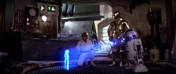

Imagen para enlazar en este caso a mi correo. Aparece un borde por defecto. Se le puede quitar con BORDER=0
Imagen para enlazar en este caso a mi correo. Aparece un borde por defecto. Se le puede quitar con BORDER=0
En esta página mostraré las cosas que me sirvieron para trabajar con imágenes. Después pondré las imágenes y escenas que me gustan de Star Wars.
Texto alineado en medio
Texto alineado bajo
Con la orden HSPACE y VESPACE indicas el espacio vertical y horizontal que deseas fuera de la imagen.
Puedes indicar que aparezca en principio una imagen en baja resolucion para que vaya más aprendida y después carga otra imagen en mas resolucion.
La historia de Star Wars arranca con un pedido de ayuda de la princesa Leia.
Videos que me gustaron
Egresé del Colegio José Manuel Estrada y elegí formarme como profesor de inglés, dado que me gusta la enseñanza. Hoy en día me gustaría expandir mis fronteras. Dado que la pandemia se hizo presente y esto me da la oportunidad de poder cursar online muchos cursos. Gracias por brindarme el material para poder aprender un poquito más.